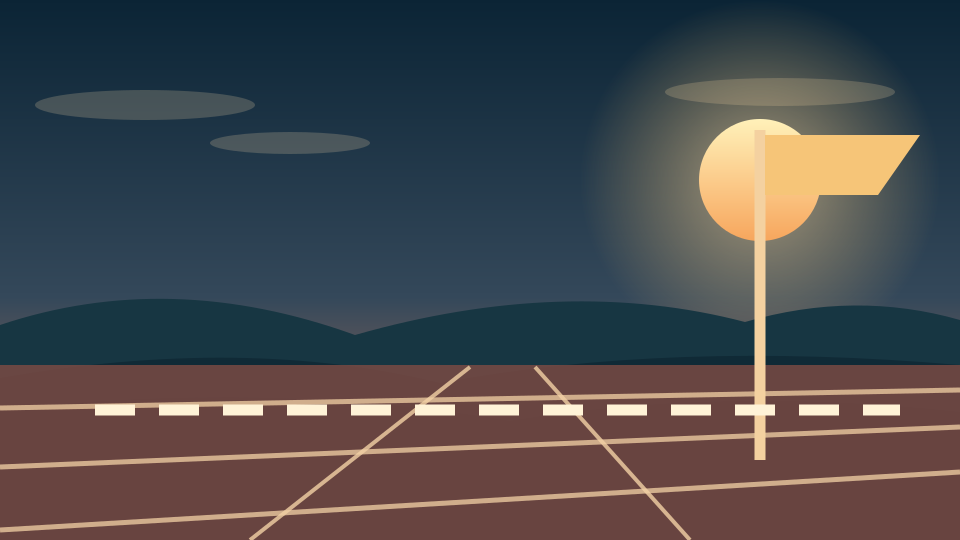
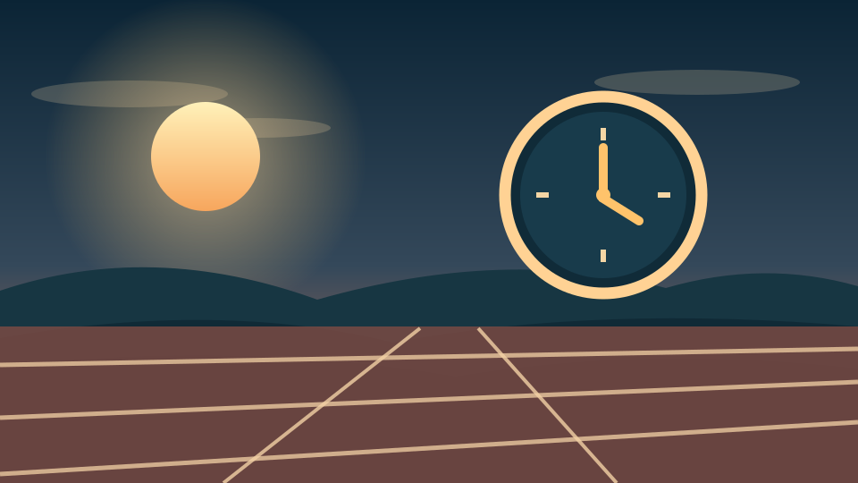
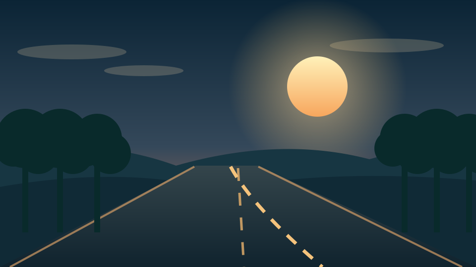
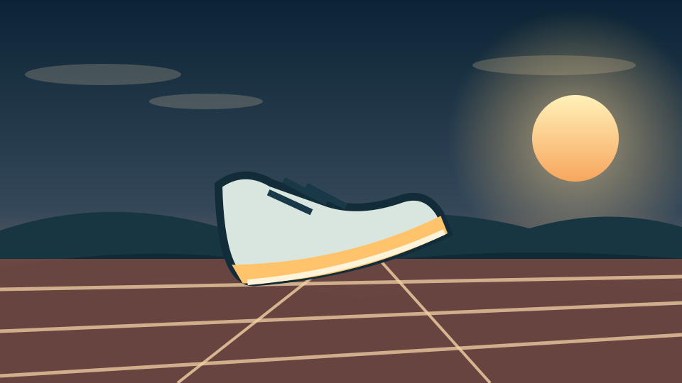
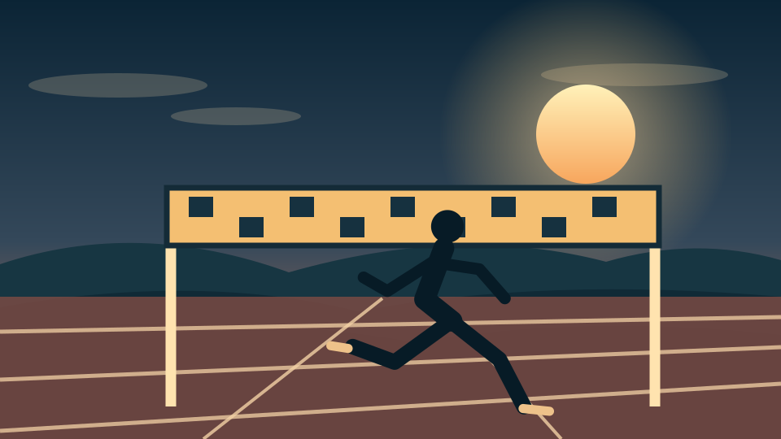

Running is more than a physical activity. It is a way
to challenge yourself, clear your mind, and build
discipline. Whether on a track, treadmill, or
neighborhood path, every mile is a chance to improve.
Build Physical Fitness
Build Physical Fitness
AI prompt: Create an original dark-and-gold
vector illustration of a runner training
on a track at sunrise.
Running builds endurance, supports heart health,
and strengthens the legs. Consistent training
makes everyday movement and other activities
feel easier.
Clear Your Mind
Clear Your Mind
AI prompt: Create a calm vector skyline
and running trail at sunset using deep
navy and warm gold.
A run creates time to think, reset, and step
away from distractions. Getting outside and
moving can help improve mood and focus.
Set and Achieve Goals

Set and Achieve Goals
AI prompt: Create an original vector
athletics track with a finish line,
sunset, and an ambitious racing atmosphere.
Whether the goal is a faster mile, a longer
distance, or finishing a race, running rewards
consistency, patience, and hard work.
✦
Who Is Behind the Miles?
This hobby site shares how running fits into my life
and why I enjoy improving a little at a time.
Meet the Runner
I'm Tony Mason, a UNC Charlotte student
who enjoys fitness, challenging workouts,
and setting measurable goals.
My Approach
I enjoy mixing easy runs with more focused
sessions. I pay attention to pacing, effort,
and how my training improves over time.
What Keeps Me Going
Progress is motivating. Every run gives me
another opportunity to develop discipline
and learn what I can accomplish.
A Runner's Journey
AI prompt: Create an original cinematic
vector illustration of a runner on a city
path, with a warm sunrise and navy shadows.
✦
When Is the Best Time to Run?
The best time is the one that fits your schedule
and lets you train consistently. Morning and
evening runs each have advantages.
Morning or Evening?
Cooler mornings can feel refreshing,
while evenings may work better after
classes and responsibilities. Choose
well-lit routes when visibility is low.
Example Weekly Running Schedule
Day
Run
Focus
Tuesday
Easy run
Comfortable pace
Thursday
Intervals
Speed and control
Saturday
Steady run
Endurance
This is an example, not a fixed training
prescription. Rest and recovery days are
important, too.

Make Time for the Miles
AI prompt: Create a vector illustration
of an early morning running track with
a stylized clock and golden sunrise.
✦
Where Can You Run?
A good running location depends on your workout,
the weather, and how comfortable you feel in
the environment.
Tracks
Tracks are great for measuring distance,
practicing pacing, and completing interval
workouts on a predictable surface.
Parks and Trails
Greenways and park paths are useful for
relaxed runs and enjoying the outdoors.
Pay attention to trail conditions and
other visitors.
Treadmills
Treadmills offer a controlled option
when weather, darkness, or scheduling
makes outdoor running difficult.

Find Your Running Route
AI prompt: Create an original vector
illustration of a winding running trail
in a park with dark green trees and
golden light.
✦
How Do You Start Running?
You do not need to be fast to begin.
The goal is to build a routine that feels
manageable and gets stronger over time.
Start with the Basics
Warm up:
Walk briskly and ease into movement.
Run comfortably:
Use a pace where you can still
speak in sentences.
Build gradually:
Increase time and distance as
your body adapts.
Recover:
Include easier days, sleep, and rest.
Track Your Progress
Record your distance, time, and how
each run felt. Consistency over several
weeks tells you more than a single
hard workout.

One Step at a Time
AI prompt: Create an original vector
illustration of running shoes on a
track with motion lines and warm
gold highlights.
✦
Why Do I Love Running?
Running makes progress visible. A difficult
workout today can become a comfortable effort
after weeks of practice.
Personal Growth
Running teaches me to stay consistent
even when improvement is gradual.
Small accomplishments add up.
Confidence
Completing a challenging run reminds
me that preparation and determination
can make difficult goals achievable.
Freedom
Sometimes the best part is simply
being outdoors, moving forward,
and enjoying a break from the day.

Run Stronger Every Day
AI prompt: Create an original inspirational
vector illustration of a runner crossing
a finish line at sunset.
✦
AI Prompts and Credits
AI assisted with this site's HTML, CSS,
JavaScript, writing, and original SVG artwork.
The prompts below describe that assistance.
Website Code Prompt
"Build a responsive single-page running
hobby website with seven sections,
embedded CSS, accessible navigation,
and JavaScript that displays only
the selected section. Use a dark
navy and gold design."
Writing Prompt
"Write clear, student-friendly content
explaining who, what, when, where,
how, and why someone enjoys running.
Include practical examples and a
personal perspective."
Artwork Prompt
"Create a coordinated set of original
SVG running illustrations using a
cinematic dark navy, sunset orange,
and gold palette. Include tracks,
trails, runners, and a city skyline."
All artwork in the images
folder was created as AI-assisted original
SVG code for this project, not copied
from another website.
How This Site Was Created
AI prompt: Create an original vector
illustration combining a coding screen
and a running track in a consistent
navy-and-gold style.